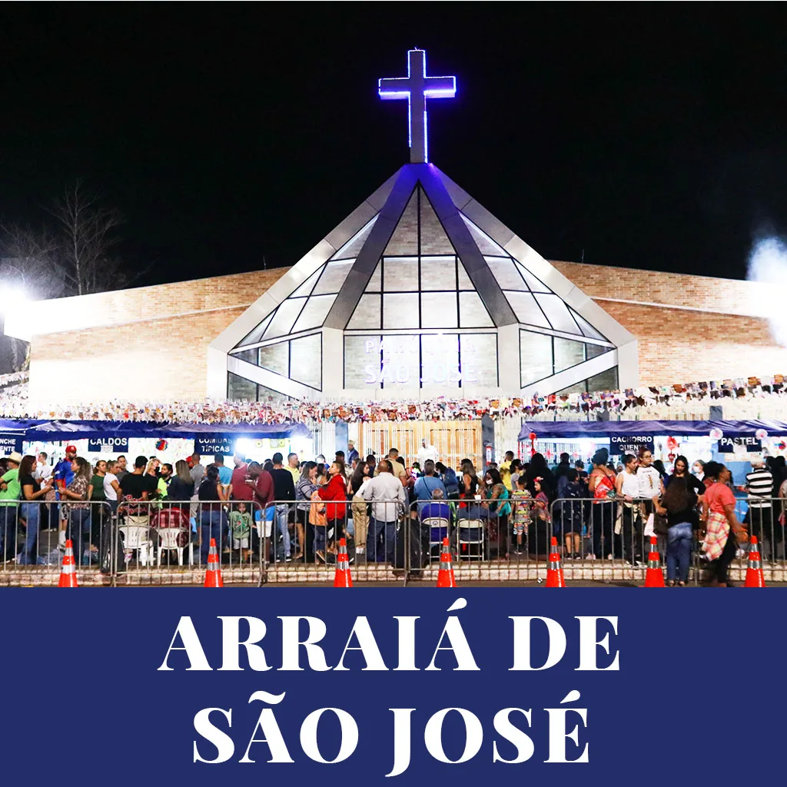
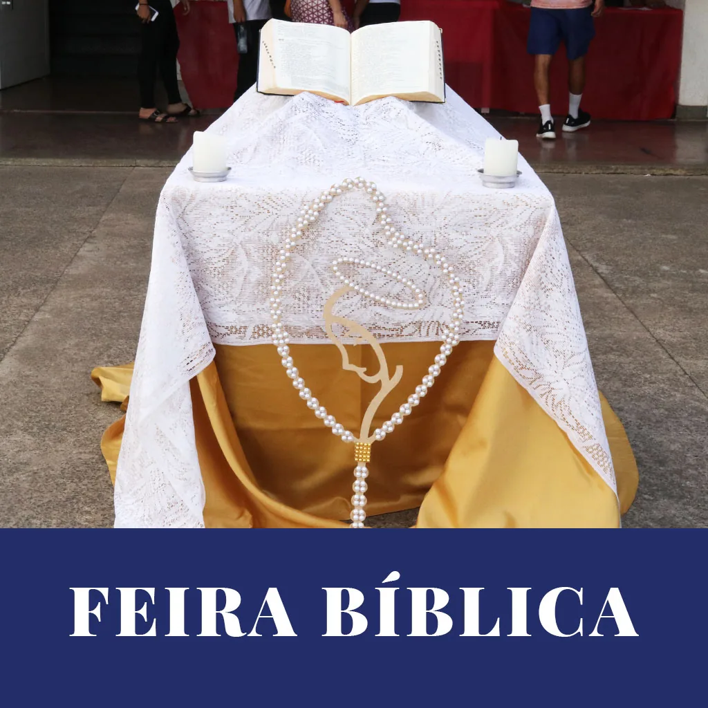

Momentos de festa, fé e comunhão da nossa comunidade.

Festa junina da comunidadeArraiá de São José
Palavra de Deus para todosFeira BíblicaAcompanhe as novidades e a programação completa em nossas redes sociais e no blog da paróquia.